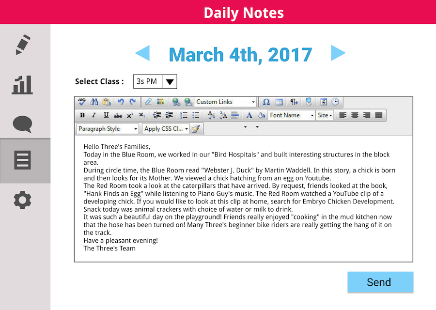

MAGPIE
Rapid Prototyping
BACKGROUND
The Children’s School at CMU challenged the Rapid Design and Prototyping for Computer systems class to help track the locations and activities of all members of the school and help make dismissal an easier and less stressful process.MY ROLE
For phase 1, I was the leader for the Human Computer Interaction team. For phases 2 and 3 I was the interface and interaction designer.RESEARCH - SCHOOL VISIT
RESEARCH METHODS
Children’s School faculty presentations
Contextual research
Parent interviews
Secondary research
Affinity Mapping
CHALLENGES
How can we better track student locations, interests, and activities?
How can we make dismissal less stressful and more efficient?
How can we do all of this while staying out of the way?
BRAINSTORMING

HCI TEAM
Individually list problems found.
As a group put these into categories.
Vote on which categories we should focus on.
IDEATION
SCENARIOS
Wrote user personas
Refined baseline scenario
SOLUTIONS
Brainstormed solutions
Created solution affinity maps
Feasibility vs value matrix
CONCEPTUAL DESIGN
DESIGN PRINCIPLES
- Security
- Conforming to school's values
- Ambient
- Flexible
- Time sensitive
- Robust
WHAT WE ARE GOING TO MAKE
- Wearables to gather data from students and possibly teachers
- In-classroom dashboard stations
- Mobile app interfaces to be used by parents, teachers, researchers
- Devices to help with dismissal
ARCHITECTURE DIAGRAM
CHALLENGES REVISITED
How can we make teachers’ lives easier?
How can we make dismissal more efficient?
How can we enhance parent-teacher communication?
How can we do all of this while staying out of the way?
LOGO DESIGN
WIREFRAMES
LOG IN
PARENT’S MOBILE APP
TEACHER’S VIEW WIREFRAMES
(not all displayed)|  | |
ADMIN’S VIEW WIREFRAMES
(not all displayed)